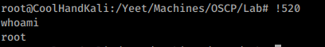

3.1.3.2 Exercises
☐ Inspect your bash history and use history expansion to re-run a command from it.

☐ Execute different commands of your choice and experiment browsing the history through the shortcuts as well as the reverse-i-search facility